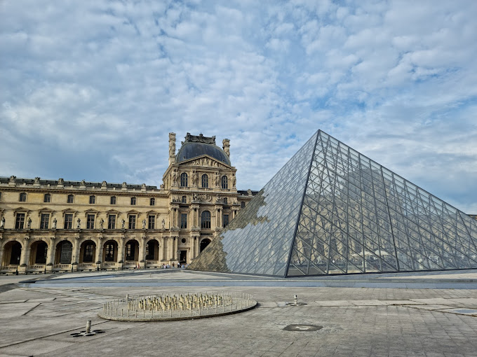

Eyfel Kulesi

Eyfel Kulesi, Paris'in ve hatta Fransa'nın sembolüdür. 1889 yılında inşa edilen kule, dünyanın en çok ziyaret edilen turistik yapılarından biridir. Gece aydınlatmalarıyla büyüleyici bir manzara sunar.
Louvre Müzesi
Dünyanın en büyük sanat müzelerinden biri olan Louvre, Mona Lisa başta olmak üzere binlerce önemli esere ev sahipliği yapar. Paris’in kalbinde yer alır ve cam piramidi ile tanınır.
Mont Saint-Michel

Manş Denizi'nde gelgitlerle bağlantısı kesilen bir ada üzerinde yer alan Mont Saint-Michel, orta çağdan kalma mimarisiyle dikkat çeker. UNESCO Dünya Mirası Listesi'nde yer alır ve mistik atmosferiyle ünlüdür.